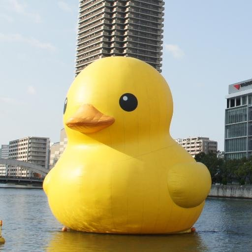

品モノラジオ
品モノラボがお送りする“メイカー”と“メーカー”のためのモノづくり系ポッドキャスト
063 「2022年ふりかえり」湯村 翼＆塚谷 浩司
2022/12/27
062 「ヒーローズリーグ2022ふりかえり」湯村 翼＆塚谷 浩司
2022/12/18
061 「Maker Faire Tokyo 2022 ふりかえり」湯村 翼＆塚谷 浩司
2022/09/08
060 「Maker Faire Tokyo 2022 直前特集」湯村 翼＆塚谷 浩司
2022/08/28
059 「プロトタイプでひきだしを増やす」豊田 陽介＆湯村 翼＆塚谷 浩司
2022/07/17
058 「NT金沢2022ふりかえり」一瀬 卓也＆堀 洋祐＆湯村 翼＆塚谷 浩司
2022/06/25
057 「展示を見るときのポイント」湯村 翼＆塚谷 浩司
2022/04/23
056 「ヒーローズリーグ2021 品モノラジオ賞受賞作品 the 8BIT KEYBOARD開発秘話」ひげだるま＆湯村 翼＆塚谷 浩司
2022/03/27
055 「2021年ふりかえり」湯村 翼＆塚谷 浩司
2021/12/28
054 「ヒーローズ・リーグ2021 品モノラジオ賞ノミネート」湯村 翼＆塚谷 浩司
2021/12/04
053 「オンラインでの展示イベントについて」湯村 翼＆塚谷 浩司
2021/09/05
052 「NT金沢2021、NT金沢mini＠まるびぃ」五味＆湯村 翼＆塚谷 浩司
2021/07/18
051 「MIDI自動演奏装置展示秘話など」necobit＆湯村 翼＆塚谷 浩司
2021/05/23
050 「Maker Faire Kyoto 2021 振り返りと第50回記念お便りコーナー」湯村 翼＆塚谷 浩司
2021/05/02
049 「Maker Faire Kyoto 2021 直前特集」湯村 翼＆塚谷 浩司
2021/04/24
048 「石川での6年間」湯村 翼＆塚谷 浩司
2021/03/14
047 「グローバル・ローカル・チームでのものづくり」水田 千惠＆湯村 翼＆塚谷 浩司
2021/02/11
046 「ミクミンPのものづくり経歴」ミクミンP＆湯村 翼＆塚谷 浩司
2021/01/24
045 「NT札幌と2020年振り返り」湯村 翼＆塚谷 浩司
2020/12/30
044 「Ogaki Mini Maker Faire、ヒーローズリーグ、NT加賀2020振り返り」湯村 翼＆塚谷 浩司
2020/12/13
043 「おばけパズル開発秘話」井上 幸人＆湯村 翼＆塚谷 浩司
2020/10/24
042 「Maker Faire Tokyo 2020 振り返り」古賀 由希子＆湯村 翼＆塚谷 浩司
2020/10/08
041 「NT金沢mini@まるびぃ」湯村 翼＆塚谷 浩司
2020/09/13
040 「クリエイターとしての作品制作」 水落 大＆湯村 翼＆塚谷 浩司
2020/08/22
039「プロトタイプシティ出版記念」高須 正和＆湯村 翼＆塚谷 浩司
2020/08/09
038「自分の作品の話」湯村 翼＆塚谷 浩司
2020/07/24
037「ハッカソンとその先」古川 信行＆湯村 翼＆塚谷 浩司
2020/06/20
036「最近のオンラインイベントについて」湯村 翼＆塚谷 浩司
2020/06/06
035「カサネタリウム10周年」堀 洋祐＆湯村 翼＆塚谷 浩司
2020/05/16
034「Maker Faire Kyoto Online、趣味TECH祭2020」湯村 翼＆塚谷 浩司
2020/05/03
033「ロボットボールomicroと世界のMaker Faire」一瀬 卓也＆湯村 翼＆塚谷 浩司
2020/04/11
032「品モノラボ7周年公開収録 in Cluster」田中 章愛＆古賀 由希子＆湯村 翼＆塚谷 浩司
2020/03/20
031「前骨格と鈴木さん」鈴木 宏明＆湯村 翼＆塚谷 浩司
2020/03/14
030「Tsukuba Mini Maker Faire 2020参加報告など」田中 章愛＆湯村 翼＆塚谷 浩司
2020/02/24
029「NT札幌2019 開催報告など」湯村 翼＆塚谷 浩司
2019/12/21
028「Maker Faire Shenzhen 2019 参加報告」湯村 翼＆塚谷 浩司
2019/11/16
027「1年間のメイカーイベントふりかえり」湯村 翼＆塚谷 浩司
2019/11/03
026「Maker Faire Taipei 2018 参加報告」湯村 翼＆塚谷 浩司
2018/11/10
025「Maker Faire Tokyo 2018 報告会」古賀 由希子＆湯村 翼＆塚谷 浩司
2018/09/09
024「Maker Faire Tokyo 2018 直前特集」古賀 由希子＆湯村 翼＆塚谷 浩司
2018/07/28
023「NT金沢2018直前特集」秋田 純一＆五味
2018/06/24
022「ものづくり、ハッカソンで地方を元気に」若狭 正生
2018/05/26
021「TMCNからxMCNとホロラボへ」伊藤 武仙
2018/04/07
020「Mashup Awardsのこれまでとこれから」伴野 智樹 ＆ 鈴木 まなみ
2018/03/04
019「IoTLTとコミュニティ」菅原 のびすけ
2018/02/03
018「2017年振り返り」塚谷 浩司＆湯村 翼
2018/01/07
017「Maker Faire Tokyo 2017 振り返り」古賀 由希子＆塚谷 浩司＆湯村 翼
2017/08/11
016「Maker Faire Tokyo 2017 直前特集」古賀 由希子＆塚谷 浩司＆湯村 翼
2017/07/29
015「研究の民主化、日本の未来、デジタルネイチャー」落合 陽一
2017/05/01
014「MESHとプログラミング」萩原 丈博
2017/03/26
013「新里さんとものづくり」新里 祐教
2017/03/04
012「品モノラジオ1周年ふりかえり」湯村 翼＆塚谷 浩司
2017/02/05
011「デザインからMakerへ」やまざき☆はるき
2016/12/29
010「Maker Faireに行ったら人生が変わった」岡田 貴裕
2016/11/13
009「MFT2016振り返り＆ABProで寿司が止まって見える装置」湯村 翼＆塚谷 浩司
2016/10/23
008「Maker Faire Tokyo 2016 直前特集」古賀 由希子＆塚谷 浩司＆湯村 翼
2016/07/31
007「Maker Faire Singapore 2016 出展報告」湯村 翼＆塚谷 浩司
2016/07/03
006「Makerのつながりの作り方」高須 正和＆伊豫田 旭彦
2016/06/12
005「べゼリーができるまで」豊田 淳
2016/06/05
004「ニコ技深センツアー・出版イベント報告」湯村 翼＆塚谷 浩司
2016/05/14
003「プロジェクションカードバンドの軌跡」稲垣 敬子
2016/03/27
002「旅するコミュニティ」古賀 由希子
2016/02/28
001「品モノラボとクリエイティブラウンジ」田中 章愛＆舘野 祐一
2016/02/16
000「品モノラジオ始めてみた」湯村 翼 ＆ 塚谷 浩司
2016/01/31
All Posts
Personality
Tsubasa Yumura
@yumu19

Koji Tsukaya
@ajimitei